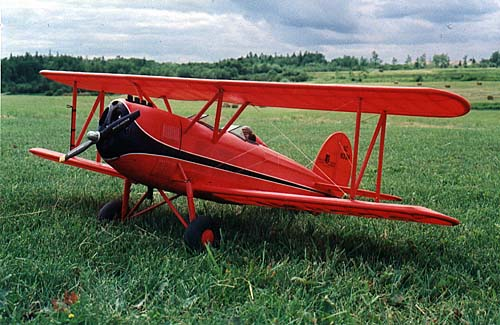
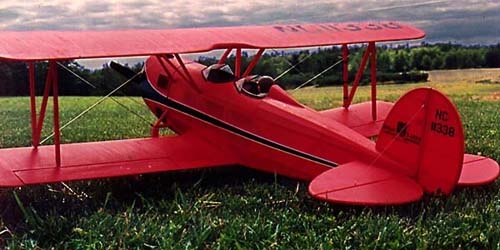

<HTML><HEAD>

<TITLE>Great Lakes Trainer</TITLE>
<!-- Date: Monday, May 11, 1998  3:58 PM -->
</HEAD>
<body bgcolor=white>
<center>
<!-- IMG SRC="/cgi-bin/Count2?uname=thayer|num=158|show=F" width=10 height=1>

<H2>Great Lakes Trainer</H2>
<p>

<p>
<table width=590 border=0>
<tr><td>
This model was great fun to build from the old Flyline kit if not a little time consuming with its traditional stick and stringer construction.  Actually, I expect I took more time cutting out the very high quality print wood, than actually framing it up.  As with any scale model, many more hours go into detailing.  This model has functional louvers in the cowl for engine cooling, sprung landing gear, wire rigging, laced cockpit combing, and instrument panels.
<P>
Turning the prop is an OS 15 two stroke, and it proves to be more than enough power.  Getting out of the grass strip shown is not a problem at all.  The model is a faster than I expected.  Perhaps experimenting with props is in order.  I would also like to install an OS 26 FS that I have waiting.  Flying weight is 42 oz, with 4 Futaba S-133's and a 275 ma pack for full house control.
</table>
<p>


<P>
<a href=../rce.html>Return</a>
<P><HR SIZE=2 WIDTH="50%">
<P>Copyright 2000, <a href=mailtothayer5@mindspring.com>Thayer Syme</a>.  All rights reserved</P>

</body></html>
